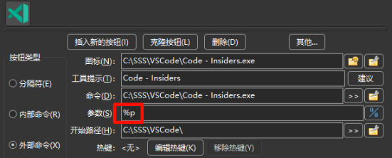

变量用于配置 工具栏按钮、设置 文件关联 操作或 快捷键 操作时，作为命令参数传递。
通常在需要根据当前所选文件、当前目录以及面板上下文决定命令参数时使用变量。
举个简单例子：有人配置了一个按钮，用来用变量 %p 作为参数启动 VSCode。

当点击该按钮时，%p 会被替换为活动面板中当前选定的文件，然后用此参数启动 VSCode。
这就是本页所述的 变量 的用途。
如你所见，大多数变量以百分号 % 开头。
注意：变量和后缀区分大小写！
下面是与当前选择相关的基本变量。
默认情况下，包含空格或特殊字符的变量值会自动转义：在 Windows 下会被双引号包裹；在类 Unix 系统下会用反斜杠转义这些字符。如果需要不带引号的值，请参见 是否带引号 一节。
下列示例均假设我们指向的文件为 C:\Users\UserName\Desktop\comment.png。
| 基本变量 | |
|---|---|
| 变量 | 含义 |
%p |
完整文件名（包含路径）示例: %p = "C:\Users\UserName\Desktop\comment.png" |
%f |
仅文件名（含扩展名）示例: %f = "comment.png" |
%d |
仅路径，不含末尾的目录分隔符示例: %d = "C:\Users\UserName\Desktop" |
%z |
路径中最后一级目录名示例: %z = "Desktop" |
%o |
不含扩展名的文件名示例: %o = "comment" |
%e |
仅扩展名，不含点符号示例: %e = "png" |
%v |
相对于当前活动目录的相对文件名 例如当使用内部命令 cm_FlatView 时适用。 如果对目录 "C:\Users\UserName" 做了平铺视图，%v 的结果会是 "Desktop\comment.png" |
%a 变量用于虚拟文件系统（如打开的压缩包文件或文件系统插件）：该字符串包含虚拟文件系统的路径（压缩包文件的完整名称或带有 "wfx://" 的 WFX 插件名称）以及相对于虚拟文件系统根的完整文件名。
如果选中了多个文件，这些变量会把所有选中文件的值放在同一行返回。若始终只想获取光标所在文件的值，可以使用 编号后缀 0。
在前述变量字母后，可以追加另一个字母来指定更精确的目标。
下列示例假设：左面板指向 "C:\LeftFolder\File.lft"，右面板指向 "C:\RightFolder\File.rgh"，且当前活动面板为右侧。
| 基本后缀 | |
|---|---|
| 后缀 | 含义 |
s |
来源面板或活动面板（无论左或右）示例: %ps = "C:\RightFolder\File.rgh" |
t |
目标面板或非活动面板（无论左或右）示例: %pt = "C:\LeftFolder\File.lft" |
l |
左侧面板示例: %pl = "C:\LeftFolder\File.lft" |
r |
右侧面板示例: %pr = "C:\RightFolder\File.rgh" |
p |
两面板：先活动面板，再空格，再非活动面板示例: %pp = "C:\RightFolder\File.rgh" "C:\LeftFolder\File.lft" |
b |
两面板：先左侧，再空格，再右侧示例: %pb = "C:\LeftFolder\File.lft" "C:\RightFolder\File.rgh" |
当选中了多个文件时，可以在前述后缀后追加编号，以指定要使用的具体文件。
下列表格假设来源面板为 "C:\temp\"，并选中了 26 个文件，命名为 "FileA.txt"、"FileB.txt" … 到 "FileZ.txt"。
| 编号后缀 | |
|---|---|
| 后缀 | 含义 |
0 |
光标所在的文件示例: %ps0 = "C:\temp\FileY.txt" |
1 |
第一个被选中的文件示例: %ps1 = "C:\temp\FileA.txt" |
2 |
第二个被选中的文件示例: %ps2 = "C:\temp\FileB.txt" |
3 |
第三个被选中的文件示例: %ps3 = "C:\temp\FileC.txt" |
21 |
第 21 个被选中的文件示例: %ps21 = "C:\temp\FileU.txt" |
有时把参数传给可执行程序时，需要在文件名前加上某些文本。
有时则需要在文件名前后分别加上文本。
下述操作将应用到每个单独的选中项。
表格示例假设当前目录为 "C:\Windows\Fonts"，选中了三个文件："courrier.ttf"、"fixedsys.ttf" 和 "terminal.ttf"。
| 前缀和后缀 | |
|---|---|
| 表示法 | 含义 |
{} |
使用一组大括号会把括号内的文本加在每个选中文件名前示例: %fs{+} = "+courrier.ttf" "+fixedsys.ttf" "+terminal.ttf" |
{}{} |
使用两组大括号会在每个选中文件名前后分别加入括号内的文本。示例: %fs{[}{]} = "[courrier.ttf]" "[fixedsys.ttf]" "[terminal.ttf]" |
前面简介的是与面板中选中文件相关的变量。
还可以使用变量 %D 来表示面板的目录路径。
该变量同样可以添加前面提到的 后缀字母 来指定具体是哪个面板。
下列示例假设：左侧面板为 "C:\Reference"，右侧面板为 "E:\Work"，且当前活动面板为右侧。
| 面板路径 | |
|---|---|
| 变量 | 含义 |
%D |
不带后缀时，返回当前活动面板的路径示例: "E:\Work" |
%Ds |
当前活动面板或来源面板的目录（无论左或右）示例: "E:\Work" |
%Dt |
非活动面板或目标面板的目录（无论左或右）示例: "C:\Reference" |
%Dl |
左侧面板的目录示例: "C:\Reference" |
%Dr |
右侧面板的目录示例: "E:\Work" |
%Z |
不带后缀时，返回当前活动面板路径的最后一级目录名示例: "Work" |
%Zs |
当前活动面板路径的最后一级目录名（无论左或右）示例: "Work" |
%Zt |
非活动面板路径的最后一级目录名（无论左或右）示例: "Reference" |
%Zl |
左侧面板路径的最后一级目录名示例: "Reference" |
%Zr |
右侧面板路径的最后一级目录名示例: "Work" |
%A 变量用于虚拟文件系统（如打开的压缩包文件或文件系统插件）：返回压缩包文件的完整名称或带有 "wfx://" 的 WFX 插件名称。
如前所述，出于历史兼容性原因，Double Commander 默认会返回带引号的结果。
这是为了在文件名包含空格时，把文件名作为参数传递时能保持整体正确。
随着更多变量的加入，明显需要一种方式来返回不带引号的结果。常见场景例如把不带扩展名的文件名与新的扩展名直接拼接。
因此我们无需新增变量，只需在参数行中使用类似 %"0 的标记，告知 DC 从该位置起到行尾产生的结果不带引号。
基本规则：
%"0 ：从此处起返回的不带引号%"1 ：从此处起返回带引号%" ：也可用以恢复默认（带引号）下表示例中，我们假设选中的文件名为 "Client List.mdb"，展示不同组合的引号行为：
| 是否带引号示例 | |
|---|---|
| 表达式 | 结果 |
%o.zip |
"Client List".zip |
%"0%o.zip |
Client List.zip |
%"0"%o.zip" |
"Client List.zip" |
%"0"%o.zip" %"1%f |
"Client List.zip" "Client List.mdb" |
历史原因导致 DC 返回路径时默认不包含尾部分隔符。
可以使用特定变量来控制后续路径变量是否包含尾部分隔符。
基本规则：
%/0 ：返回路径不带尾部分隔符%/1 ：返回路径带尾部分隔符%/ ：同样接受，默认返回不带尾部分隔符下表示例中，我们假设所选目录为 "C:\Users\UserName\Desktop"：
| 路径尾分隔符示例 | |
|---|---|
| 表达式 | 结果 |
%D |
"C:\Users\UserName\Desktop" |
%/0%D |
"C:\Users\UserName\Desktop" |
%/1%D |
"C:\Users\UserName\Desktop\" |
%/%D |
"C:\Users\UserName\Desktop" |
在组合多个变量构成路径时，该变量很有用。例如在 Windows 中，直接使用 %Dt\%f0（手动添加目录分隔符）而不是 %/1%Dt%f0 可在常规目录下工作，但当非活动面板打开为驱动器根时，后者可能导致驱动器字母后出现两个分隔符而产生错误路径。
有些应用接受单个文件名作为参数，并假定该文件为文本文件，内含文件名列表。
Double Commander 提供的变量可以创建一个临时文本文件（放在系统临时目录），其内容为所选项的列表，并将该临时文件名替换到变量位置。
| 文件列表变量 | |
|---|---|
| 表达式 | 说明 |
%L |
生成的列表文件名，列表内容为选中项的完整路径（路径 + 文件名） |
%F |
生成的列表文件名，列表内容仅含文件名 |
%R |
生成的列表文件名，列表内容为相对路径（相对于活动目录） |
在 Windows 中，列表文件默认使用系统 ANSI 编码；在类 Unix 系统中使用系统默认编码（在多数 Linux 发行版中通常为 UTF-8）。
关闭后，Double Commander 会删除所有此类临时文件。
默认情况下，列表文件中的文件名不带引号。如需带引号，可添加相应后缀。
此外，还可以通过后缀指定列表文件的编码为 UTF-8 或 UTF-16。
| 列表文件变量的后缀 | |
|---|---|
| 表达式 | 说明 |
Q |
列表中的文件名将被引号包裹 |
U |
列表文件采用 UTF-8 编码 |
W |
列表文件采用 UTF-16 编码 |
还可以追加后缀来指定列表应来自哪一面板，使用前文提到的后缀字母。
下面是一些可能的组合示例：
| 列表变量后缀的组合 | |
|---|---|
| 表达式 | 说明 |
%LQt |
完整文件名，带引号，来自目标面板的选中文件 |
%FUs |
仅文件名，采用 UTF-8 编码，来自来源面板的选中文件 |
%RQW |
相对路径文件名，带引号，采用 UTF-16 编码，来自来源面板（默认） |
可以在参数中指定是否希望将配置的命令行在终端中执行。
为此使用变量 %t。
| 在终端中执行 | |
|---|---|
| 表达式 | 说明 |
%t0 |
在终端中运行，执行结束后关闭终端 |
%t1 |
在终端中运行，执行结束后保持终端打开 |
下面两个变量用于显示消息或在运行时提示用户输入参数（并提供默认值）：
| 交互 | |
|---|---|
| 表达式 | 说明 |
%[message to show] |
显示一个消息框，内容为方括号内的文本 |
%[message;default_val] |
提示用户输入一个值，并显示方括号内指定的默认值 |
交互示例：
| 交互示例 | |
|---|---|
| 表达式 | 说明 |
%[Make sure ThisFile.ext is closed!] |
在执行操作前显示消息 “Make sure ThisFile.ext is closed!”。 |
%[Enter WIDTH value for image conversion;1024] |
提示用户输入值并显示文本 “Enter WIDTH value for image conversion”，默认建议值为 1024，用户可修改。用户输入的结果将替换命令行中所在的位置（即 "%[query;default]" 表达式的位置）。 |
本节列出尚未简介的其它变量。
| 其他变量 | |
|---|---|
| 表达式 | 说明 |
%% |
将被替换为单个百分号 % |
%# |
从此处起，# 将被视为百分号的等价符号 |
#% |
从前述状态恢复，让 % 再次被视为变量前缀 |
%? |
显示即将要执行的命令行。 |
当你需要在参数中包含 % 符号但又不希望其被解析为变量时，可使用 %%。
%? 在配置新工具按钮等场景非常有用，可用于预览将要替换的命令行参数。
使用 %?，DC 会显示实际用于启动程序的命令和参数，甚至可以在最后一刻对其进行修改。
当不确定要传递给目标应用的参数时，这非常有帮助。
有时百分号与变量字母的组合可能会与系统环境变量冲突。
例如输入 %os%ot，本意是把活动和非活动面板的扩展名拼接起来，但在 Windows 下可能会失败，因为 %os% 是系统变量，会被替换为操作系统名称。
此时可使用 %#。例如写成 %##os#ot。
%# 告诉 DC 从此刻起把 # 当作百分号，这样就不会与系统变量冲突。
这种用法很少需要，但必要时会很有用。若需恢复，可使用 #%。
本节将把所有支持的变量及其含义汇总到一张表格中，便于查阅。
| 变量一览 | |
|---|---|
| 表达式 | 说明 |
%p | 完整文件名（含路径） |
%f | 仅文件名（含扩展名） |
%d | 仅路径 |
%z | 路径中的最后一级目录 |
%o | 不含扩展名的文件名 |
%e | 仅扩展名（不含点） |
%v | 相对于当前活动目录的相对文件名 |
s | 表示来源/活动面板的后缀（示例: %ps） |
t | 表示目标/非活动面板的后缀（示例: %pt） |
l | 左侧面板后缀（示例: %pl） |
r | 右侧面板后缀（示例: %pr） |
p | 两面板后缀：先活动面板，后非活动面板（示例: %pp） |
b | 两面板后缀：先左侧，后右侧（示例: %pb） |
0 | 光标所在文件（示例: %ps0） |
1 | 第一个被选中文件（示例: %ps1） |
2 | 第二个被选中文件（示例: %ps2） |
3 | 第三个被选中文件（示例: %ps3） |
21 | 第 21 个被选中文件（示例: %ps21） |
{prefix} | 单组大括号：在每个文件名前加入括号内文本（示例: %f{+}） |
{prefix}{suffix} | 两组大括号：分别在文件名前后加入文本（示例: %f{[}{]}) |
%D | 默认：活动（来源）面板的路径 |
%Ds | 明确表示活动（来源）面板的路径 |
%Dt | 非活动（目标）面板的路径 |
%Dl | 左侧面板的路径（不论哪个面板处于活动状态） |
%Dr | 右侧面板的路径（不论哪个面板处于活动状态） |
%Z | 默认：活动（来源）面板路径的最后一级目录名 |
%Zs | 明确：活动（来源）面板路径的最后一级目录名 |
%Zt | 非活动（目标）面板路径的最后一级目录名 |
%Zl | 左侧面板路径的最后一级目录名（不论哪个面板处于活动状态） |
%Zr | 右侧面板路径的最后一级目录名（不论哪个面板处于活动状态） |
%"0 | 从此处起，返回的不带引号 |
%"1 | 从此处起，返回的带引号 |
%" | 也可用于恢复默认（带引号） |
%/0 | 默认：返回的路径不带尾部分隔符 |
%/1 | 返回的路径带尾部分隔符 |
%/ | 同样接受，默认返回不带尾部分隔符 |
%L | 生成的列表文件名，列表内容为选中文件的完整路径（路径 + 文件名） |
%F | 生成的列表文件名，列表内容仅为文件名 |
%R | 生成的列表文件名，列表内容为相对路径名 |
Q | %L、%F 或 %R 的后缀，要求文件名带引号 |
U | %L、%F 或 %R 的后缀，要求列表为 UTF-8 编码 |
W | %L、%F 或 %R 的后缀，要求列表为 UTF-16 编码 |
%t0 | 在终端中运行，执行结束后关闭终端 |
%t1 | 在终端中运行，执行结束后保持终端打开 |
%[message to show] | 显示方括号中指定文本的消息框 |
%[message;default_val] | 提示用户输入值，并显示建议的默认值 |
%% | 将被替换为单个百分号 % |
%# | 从此处起，# 将被视为百分号的等价符号 |
#% | 从前述状态恢复，让 % 再次作为变量前缀 |
%? | 显示即将要执行的命令行 |
在 Double Commander 的设置中可以使用环境变量：例如工具栏上可执行文件和图标的路径、插件名、收藏目录等。这是在不使用绝对路径时指定路径的便捷方式。
Double Commander 支持系统环境变量，并提供了一些自有的环境变量：
| 环境变量 | |
|---|---|
| 变量 | 说明 |
%COMMANDER_EXE% |
Double Commander 可执行文件的完整名称（路径 + 文件名，若为符号链接则返回真实文件） |
%COMMANDER_PATH% |
Double Commander 可执行文件所在目录 |
%COMMANDER_DRIVE% |
Double Commander 所在磁盘： - Windows：带冒号的驱动器字母； - 类 Unix 系统：挂载点。 |
%COMMANDER_INI% |
主配置文件（doublecmd.xml）的完整名称（路径 + 文件名） |
%COMMANDER_INI_PATH% |
Double Commander 配置文件所在目录 |
%DC_CONFIG_PATH% |
Double Commander 配置文件所在目录 |
变量名 %COMMANDER_PATH% 与 %DC_CONFIG_PATH% 不区分大小写，可跨操作系统使用百分号 %（为向后兼容，便于跨平台使用）。但在类 Unix 系统中，环境变量名称区分大小写，通常使用大写，遵循这一习惯有助于一致性。
在 Windows 中，还可以使用类似 %$Name% 的伪环境变量，代表常见的系统特殊文件夹（DC 使用 Windows API 的 SHGetSpecialFolderPath 与 SHGetKnownFolderPath 获取这些值）。这些伪变量不是普通环境变量，无法传递给子进程（从 DC 启动的应用），但在 DC 内部可像环境变量一样使用。所有这些变量都汇集在路径选择助手菜单中：在文件或目录选择按钮右侧有按钮 Some functions to select appropriate path  ，详见 此处 的说明。
，详见 此处 的说明。
这些变量也已被加入到 常用文件夹列表 菜单。
最初由 Rustem (dok_rust@bk.ru) 创建
中文版本由 H1DDENADM1N 创建